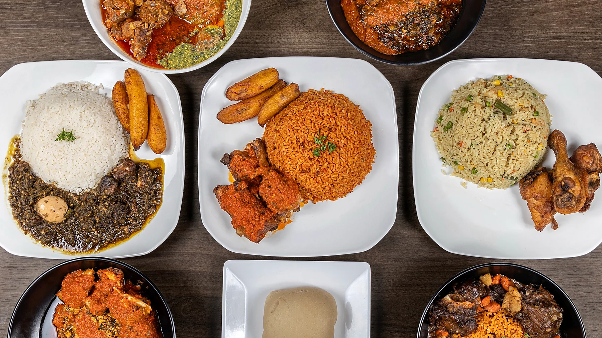

M&M African Kitchen & Bar / Frisco, Texas
Cocktails. Oxtails. Friday night.
Salmon bites, lamb chops, seafood platters, cocktails, happy hour, and a full menu of bold plates built for date nights, after-work links, birthdays, and group dinners.

Food menu
Menu first. Order faster.
Salmon bites, seafood platters, lamb chops, oxtails, cocktails, jollof, soups, and easy first-order options.
After work
Happy hour runs Tuesday-Friday, 3-7 PM.
Cocktails, salmon bites, wings, and plates that give you a real reason to stop through after work instead of driving past.
Salmon Bites
Cocktails
Oxtails
Lamb Chops
Seafood Platters
Happy Hour
Suya Wings
Jollof Rice
Shawarma
Catering
Salmon Bites
Cocktails
Oxtails
Lamb Chops
Seafood Platters
Happy Hour
Suya Wings
Jollof Rice
Shawarma
Catering


Pick a plate
Start easy. Order what looks good.
Salmon bites, seafood platters, oxtails, lamb chops, cocktails, and a full menu of plates that work whether you know the food or you are trying it for the first time.


 Live room
Live music + karaoke nights
Live room
Live music + karaoke nights

Groups Group dinners + catering Artists
DJs + open mic hosts
Artists
DJs + open mic hosts
Monthly specials + catering bundles
Preorder soup, Amala, or a full catering spread.
Monthly pickup specials and catering bundles are preorder-only. Use the current online order link or call M&M to confirm pickup, payment, and timing.
Soup special
- Pickup datesJune 12 & June 13
- Efo RiroAvailable
- EgusiAvailable
- Okra SoupAvailable
- Ogbono SoupAvailable
- AyamaseAvailable
Amala Abula includes
- Stew1.5 LTR
- Begiri1.5 LTR
- Ewedu1.5 LTR
- Beef protein with assorted1.5 LTR
- BeefIncluded
- Optional add-on5-6 Amala Balls
Preorder rules
Monthly specials are available once a month only, require advance order and payment, and are pickup-only on the scheduled dates. Catering bundles need 24-hour advance notice.
M&M African Kitchen12255 Teel Pkwy, Suite 410
Frisco, TX 75033
Follow: Instagram @mmandmafricankitchen · Facebook M&M African Kitchen
Rewards
Good meals should turn into the next visit.
Ask at the counter about current rewards, sides, specials, and regular-customer perks.
Ask today
Rewards
Sides, specials, and regular-customer perks
When rewards are available, the counter team can help connect the visit to you.
Ask about current sides, specials, and regular-customer offers before you order.
Come back for the next plate, bring friends for an event, or call ahead for a family order.
Join
Ask what is available today.
Use your name or phone number if the team is tracking a reward for your visit.
Use it
Bring your friends, order your favorites, and let the next visit work toward something good.
Ask at the counter which rewards are available today.
Find us
Teel Parkway. Retail strip. M&M sign.
The address is easy to miss from the road. Use the map pin, look for the M&M storefront sign in the Teel Parkway retail strip, then call if the plaza turns you around.
- Address
- 12255 Teel Pkwy #410, Frisco, TX 75033
- Phone
- +1 (945) 327-0366
- Hours
- Tuesday-Wednesday: 12 PM - 9 PM
Thursday: 12 PM - 10 PM
Friday: 12 PM - 12 AM
Saturday: 12 PM - 10 PM
Sunday: 1 PM - 6 PM
Monday: Closed